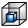

{kind=link}
 Window level: window leveling (brightness/contrast).
Window level: window leveling (brightness/contrast).The Multi-planar Viewer has three 2D viewers and one 3D viewer, similarly to the Segmentation Editor. By default, the viewer is displayed in 4-viewer mode, but the user can activate a 1-view only by double-click the viewer of choice. To switch back to 4-viewer mode just double-click on the single viewer again. Right-clicking on a viewer activates the context-menu through which the user accesses tools and visualization options:
MPR viewer
In this viewer the image data are displayed either as a conventional thin slice,
i.e. data are shown from a definite plane within the volume, or as a thick slice,
i.e. a slab with user defined-thickness. With thick slicing a maximum intensity
projection of the gray values within the slab is displayed or the user can set the
MinIP or Average (see Multi-planar Viewer overview). The thickness of the
slab can be set with the slider in the control panel. The data window can be set
with the Window level tool by clicking the correspondent icon in the toolbar.
The slice number, the total number and the orientation of the slices
are displayed in textual form at the top of each 2D slice window.
The orientation of the slice can be changed via the View icons in the toolbar.
The options in the panel "2D Settings" of the user interface control the visualization in the MPR viewer.
3D viewer
The 3D viewer of the Multi-planar Viewer is an independent 3D viewer used to display the data
and the label fields together with
an optional 3D representation of the MPR slices currently seen in the MPR viewer.
The "3D MPR" button in the panel "3D Settings" controls the activation of the MPR slices
in the 3D viewer. The border colors of the slices denote the different directions
(red=x-axis, green=y-axis, blue=z-axis).
The options in the panel "3D Settings" of the user interface control the visualization in the 3D viewer.
Navigation Tools in MPR Viewer
Rotate: rotate the thick slice around selected point or center of slice, if no point is selected.
Translate: translate the slice.
Zoom: zoom in/out.
Window level: window leveling (brightness/contrast).
Browse slices: browse slices through the MPR.
Navigation Tools in 3D Viewer
Rotate: rotate scene.
Translate: translate scene.
Zoom: zoom in/out.
Window level: window leveling (brightness/contrast).
Browse slices: N/A.
3D Clipping Tools reference
Clip Plane: clip a plane inside the volume.
Clip Corner: clip a corner of the bounding box (similar to CornerCut).
 Clip Slab: clip a slab of the volume.
Clip Slab: clip a slab of the volume.
 Clip Box: clip a box inside the volume.
Registration
Manual Registration: activate the manual registration.
2D Slices Functionalities
Center View: center the view.
Fit to Window: fits the slices to the window.
Reset Plane Position: reset the position of the slices.